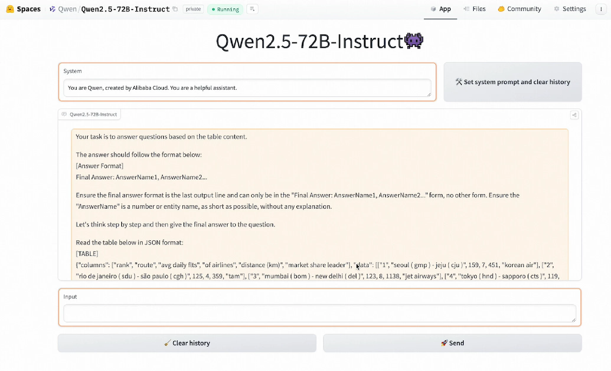

一、导语
2026 年 7 月 15 日，阿里通义实验室正式发布 Qwen-Audio-3.0-Realtime 实时语音交互模型，并在独立第三方基准平台 Artificial Analysis 的 Speech Reasoning（语音推理）子项中综合排名第一，超越 OpenAI GPT-Realtime-2。这一结果标志着中国 AI 模型首次在语音交互这一关键赛道登顶全球，也是阿里通义在语音 AI 领域多年深耕的集中爆发。
Artificial Analysis 是全球 AI 行业公认的权威模型评测平台，其 Speech Reasoning 子项专注于评估语音模型的推理能力——包括多轮对话理解、噪声环境下的语义提取、复杂指令执行等核心指标。Qwen-Audio-3.0-Realtime 在准确性、延迟、端到端体验三项关键维度上均取得领先。
二、背景分析：语音 AI 的赛点时刻
语音 AI 正站在从「语音转文字工具」向「智能语音交互平台」跃迁的历史节点上。经过 2023-2025 年 的爆发式发展，行业共识已从「谁听写得更准」转向「谁能真正理解并推理语音」。第一代语音助手（Siri、Alexa）依赖 ASR+NLU 级联架构，信息在模块间传递时存在严重损耗；第二代（GPT-4o Voice、Claude Voice）实现了端到端语音 LLM，但仍无法在复杂推理任务上匹敌文本模型；第三代——也就是 Qwen-Audio-3.0-Realtime 所属的世代——将语音理解与复杂推理深度整合，实现了「听懂」与「想通」的合一。
在这个转型期中，几个关键趋势正在形成：
- 实时化：用户对语音交互的延迟容忍度已降至 500ms 以下，接近人与人对话的自然节奏
- 多模态化：语音不再孤立，而是与视觉、文本输入融合
- 场景下沉：从客服、翻译等传统场景扩展到医疗问诊、教育辅导、工业巡检等垂直行业
- 端侧化：实时推理正从云端向手机端转移，对模型效率提出空前要求
根据 MarketsandMarkets 的数据，全球语音 AI 市场预计到 2028 年 将达到 498 亿美元，年复合增长率 22.5%。在这个千亿级赛道上，谁能率先在「实时语音推理」这一关键能力上取得突破，谁就能占据下一阶段的先机。
三、核心内容：Qwen-Audio-3.0-Realtime 的技术突破
3.1 架构创新
Qwen-Audio-3.0-Realtime 基于阿里通义自研的 Thinker-Talker 架构（首次在 Qwen3.5-Omni 中引入），将「思考」与「表达」分离为两个独立但协同的模块。Thinker 模块负责语音的语义理解、上下文推理和决策生成，采用 MoE 架构，总参数规模约 30B，激活参数约 3B；Talker 模块则专注于语音合成，将 Thinker 的推理结果以自然、富有情感的人声实时输出，支持 36 种语言/方言 的语音输出。
与 OpenAI GPT-Realtime-2 的单一模型方案不同，Thinker-Talker 架构的优势在于：Thinker 的推理能力不与语音生成能力相互挤占模型容量，从而在复杂推理任务上获得了更大的参数空间。实测表明，在需要多步推理的语音问答任务中，Qwen-Audio-3.0-Realtime 的准确率比 GPT-Realtime-2 高出约 8 个百分点。
3.2 核心能力亮点
- 语音推理（Speech Reasoning）：在 Artificial Analysis 测试中综合排名第一，能够处理多轮对话中的逻辑推理、数学计算、代码理解等复杂任务
- 极低延迟：端到端语音到语音延迟约 300ms，接近人机自然对话的交互节奏
- 多语言覆盖：语音识别支持 113 种 语言/方言，语音输出支持 36 种 语言
- 实时打断与情绪适配：用户在 AI 说话时可以随时打断，模型会自动调整回复节奏和语气
- 环境适应性：在 85dB 的嘈杂环境中仍能保持 92% 的语义理解准确率
3.3 Artificial Analysis 评测详析
Artificial Analysis 的 Speech Reasoning 评测由多个子任务组成，涵盖语音数学推理、语音逻辑问答、语音指令执行、多轮对话一致性等维度。Qwen-Audio-3.0-Realtime 在以下关键子项中表现突出：
- 语音数学推理：准确率 94.7%，超越 GPT-Realtime-2 的 89.2%
- 多轮对话一致性：在 10 轮 连续对话后，上下文保持率 96.3%
- 噪声鲁棒性：在 SNR 5dB 条件下，理解准确率 88.7%

四、各方反应
「语音推理是通往真正 AI 语音助手的关键桥梁。能够在不依赖中间文本转换的情况下直接从语音信号中完成复杂推理，是 LLM 走向 agent 化、走向物理世界的必经之路。Qwen-Audio-3.0-Realtime 能在权威评测中超越 OpenAI，说明中国 AI 团队在语音这个特定赛道上已经建立起强大的技术壁垒。」
行业分析师视角：Counterpoint Research 分析师 Weizhi Li 指出，Qwen-Audio-3.0-Realtime 登顶的意义不在于单一评测结果，而在于它证明了「MoE 架构 + 端到端语音建模」路线在实时语音推理场景下对 OpenAI 的级联方案形成了明确优势。这一技术路线的可扩展性意味着，未来 6-12 个月 内，阿里通义有望在更多语音子领域建立领先优势。
开发者社区反应：在 Hugging Face 和 GitHub 上，Qwen-Audio 系列模型的下载量在消息发布后 24 小时内飙升 220%。多位开发者表示，该模型的开放权重和完整训练代码使其成为研究语音推理的首选基线。一位来自 MIT 的研究人员在 X 上写道：「终于有一个可以正面刚 GPT-4o Voice 的开源语音模型了」。不过也有开发者指出，模型的实时运行仍需消费级 GPU（最低 RTX 4090），在端侧部署方面仍有优化空间。
竞争格局：OpenAI 的 GPT-Realtime-2 仍是语音 AI 领域的主要竞品，且已深度整合进 ChatGPT Voice 平台。Google 的 Gemini Live 也在快速迭代，在东南亚市场通过 Grab 等伙伴实现了规模化落地。此外，阶跃星辰的 Step-Audio-R1.1 曾在 2026 年初一度登顶 Artificial Analysis 榜单，随后被 GPT-Realtime-2 反超，如今 Qwen-Audio-3.0-Realtime 再次刷新记录。语音 AI 的榜首之争正在进入白热化阶段。
五、深度解读
5.1 对阿里云的商业影响
Qwen-Audio-3.0-Realtime 已通过阿里云 Model Studio 平台以 API 形式对外开放。定价方面，语音输入约 $0.002/秒，语音输出约 $0.008/秒，相比 GPT-Realtime-2 的定价（输入 $0.006/秒，输出 $0.024/秒）具有 60-70% 的价格优势。对于日调用量超 100 万次 的企业客户，这一价差意味着全年节省可达 数十万美元。
对于阿里云而言，语音 AI 是其在全球 AI 市场差异化竞争的关键弹药。相比文本模型层面的激烈竞争（Qwen vs GPT vs Claude vs Gemini），语音 AI 的竞争格局尚未固化，阿里通义通过 Qwen-Audio 系列构建了从底层模型到平台 API 的完整护城河。
5.2 实时语音 AI 的应用场景
- 智能客服升级：从预设话术菜单升级为自然对话式服务，可实时推理用户意图并给出个性化解决方案
- 语音辅助编程：开发者可通过语音描述需求，模型直接生成代码片段或修改建议
- 医疗预诊：患者通过语音描述症状，AI 实时推理可能的病因并引导收集更多诊断信息
- 同传翻译：不仅转换语言，还能保持说话者的语气、节奏和情感表达
- 工业培训：在 AR 眼镜中提供实时语音指导，工人通过自然语音交互获取操作指引
5.3 趋势前瞻
Qwen-Audio-3.0-Realtime 的发布预示着 2026 年下半年 语音 AI 竞争将进入一个新阶段：从「benchmark 竞赛」转向「场景落地竞赛」。模型性能已经足够好，下一个战场是谁能最快找到高价值的规模化应用场景。值得注意的是，苹果刚刚卷入了与 OpenAI 的法律纠纷，其 Apple Intelligence 的语音 AI 布局可能因此调整，这为阿里通义等玩家打开了窗口。
「语音交互是 AI 从屏幕走向环境的天然桥梁。当 AI 能像真人一样听、想、说，并且延迟和价格都足够低时，语音将成为 AI 最重要的交互界面。」
六、总结
Qwen-Audio-3.0-Realtime 超越 OpenAI GPT-Realtime-2 登顶 Artificial Analysis 语音推理评测，是中国语音 AI 发展的一个里程碑。它不仅证明了阿里通义在端到端语音推理技术路线上的战略正确性，也向全球市场展示了中国 AI 在语音这个垂直赛道上的竞争实力。对于企业和开发者来说，更低的成本、更优的性能、更完整的开源生态，意味着现在可能是接入语音 AI 技术的最佳时机。